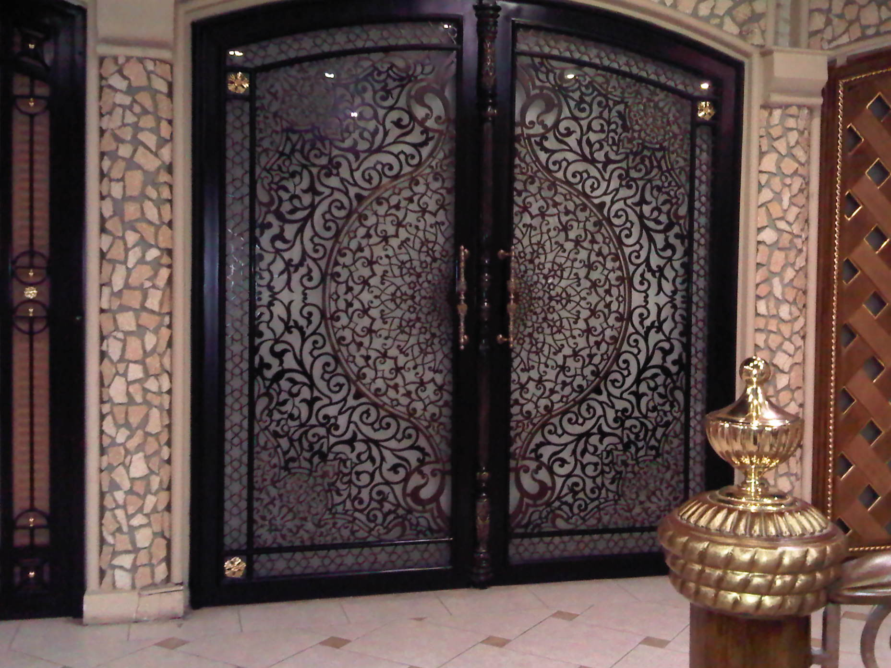
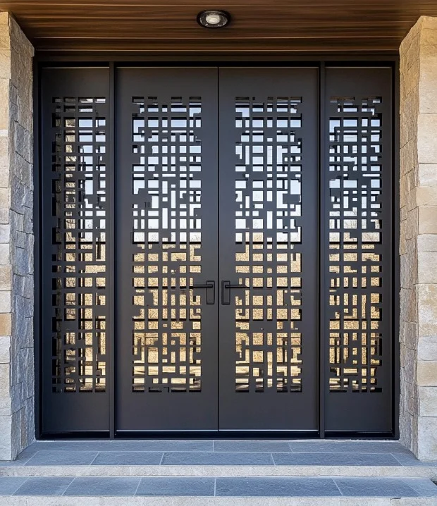
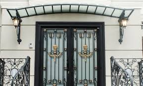
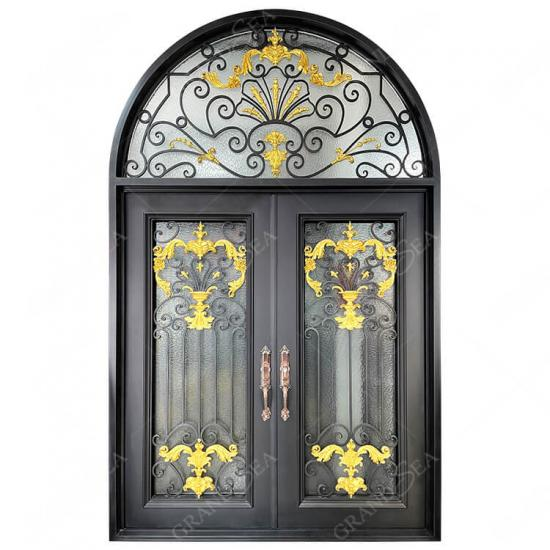
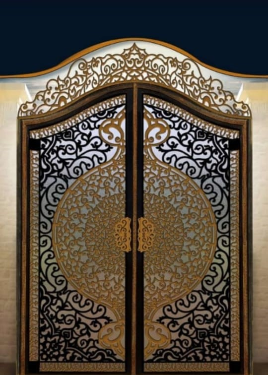
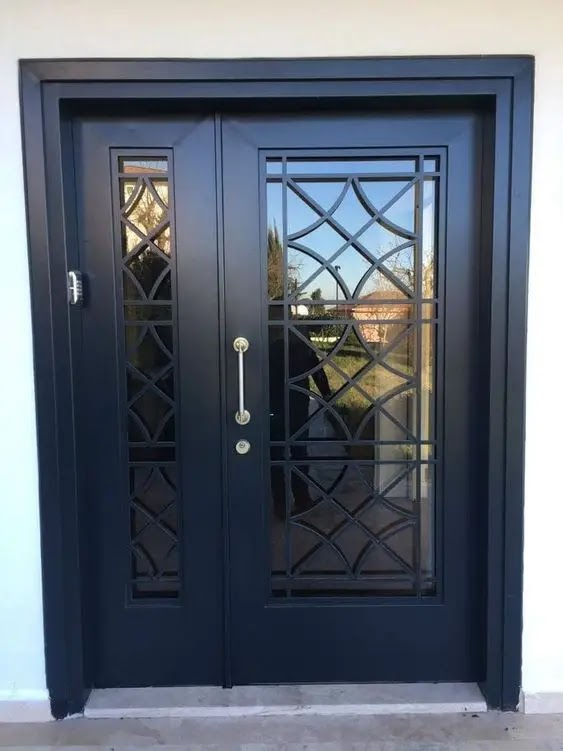
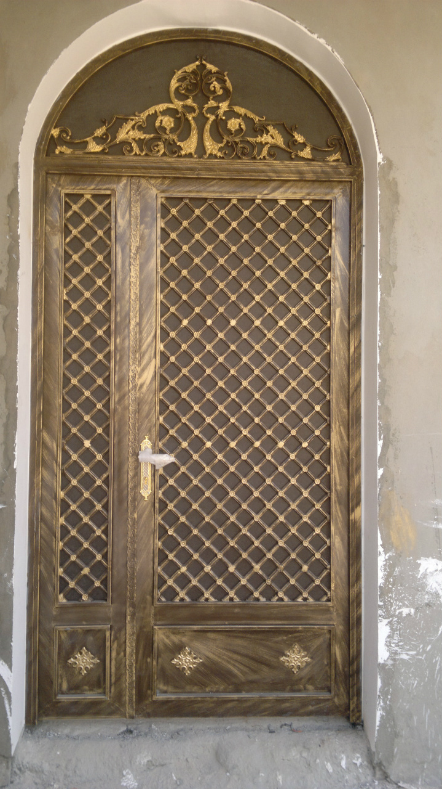
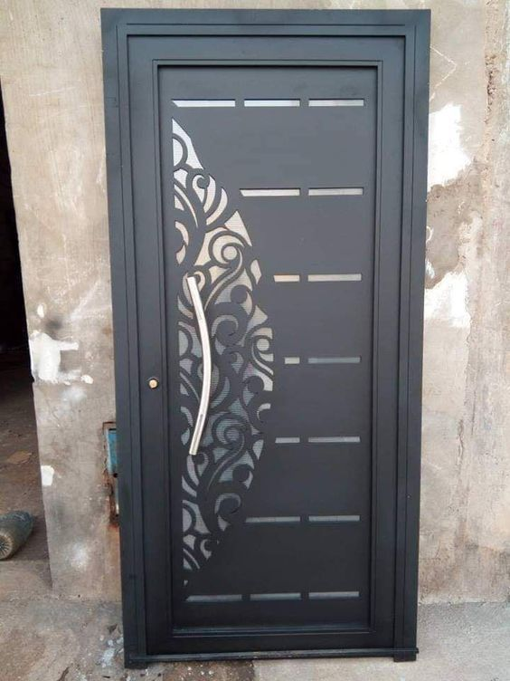

تركيب أبواب حديد قص ليزر خارجية 2026 في مدينة الرياض كتالوج ابواب حديد ليزر نُقدم أحدث موديلات
الأبواب الخارجية بالليزر من مظلات وسواتر شركة القاسم مع أفضل الأسعار لتركيب أبواب مميزة.
جودة واستدامة: نقدم أحدث موديلات الأبواب الخارجية بالليزر مع ضمان الجودة والأمان.
أبواب حديد ليزر خارجية
تصنيع أبواب الحديد بتقنية الليزر
أكتوبر 12, 2025
تتميز مؤسسة شركة القاسم بالرياض بمهارتها في تصنيع جميع أنواع أبواب الحديد، وتعتبر من أفضل الشركات في
مجال حدادة أبواب الحديد باستخدام تقنية قص ليزر.
يمتلك المهارة والقدرة على تصنيع وصيانة أعمال الحديد للأبواب والشبابيك في المنازل والفلل.
تركيب أبواب حديد داخلية
أبواب داخلية بمواصفات عالية الجودة
أكتوبر 12, 2025
نقوم بتثبيت أبواب حديد وفق معايير فنية بمواصفات عالية الجودة. أبواب خارجية ليزر، ورشة حداد الرياض
تقدم خدمات بكفاءة ممتازة وأسعار تناسب جميع الزبائن.
صور للأبواب الليزرية لعام 2026 بتصميمات عالمية حديثة تعزز من جمال وأناقة المنزل بأروع الزخارف لكل من
يعشق الفخامة والجمال.
تركيب أبواب حديد ليزر
أجمل تصاميم البوابات الليزرية
أكتوبر 12, 2025
تقدم لكم مؤسسة شركة القاسم أجمل تصاميم البوابات الليزرية في عالم الديكورات العصرية والجديدة في
مؤسستنا. أحدث صور للأبواب الحديدية وبوابات الحديد للفيلات.
القصور تتضمن تصاميم وموديلات من الحديد المشغول المميز للأبواب الداخلية والخارجية أيضًا.
سعر أبواب حديد قص ليزر
أسعار تنافسية لأبواب الليزر العصرية
أكتوبر 12, 2025
تُعتبر أبواب الليزر عمومًا من الأبواب العصرية وأصبحت أكثر شعبية بفضل تصاميمها الزخرفية ورسمها
الهندسي الواسع الذي يمنح الباب شكل جديد ومختلف.
يتم عن طريق رسم الأشكال على قطعة من الحديد ثم تفريغها باستخدام الليزر، لذلك تقدم شركة القاسم هذه
الخدمة لكم بأقل الأسعار.
جودة وسعر: نقدم أفضل جودة بأقل الأسعار المنافسة في سوق الرياض.
تفصيل أبواب حديد الرياض
تصميم مخصص يناسب ذوقك
أكتوبر 12, 2025
نقوم بتصميم أبواب الحديد وفقاً لاختيارات الأبواب الداخلية والخارجية التي تعكس واجهة المنزل، مما يجعل
الانطباع الأول يظهر ذوق مالكيه الرفيع.
تُعتبر أيضًا عنصرًا أساسيًا في جميع المنشآت، بما في ذلك بوابات الفلل والمباني، وبالتأكيد فإن
استخدامها ضروري للحصول على بيئة آمنة، ولا تتطلب وقتًا.
يتطلب الأمر الكثير من الجهد لإنشائها، فقط اتصل بشركة القاسم واختر التصميم الذي تود تخصيصه.
حديد أبواب قص ليزر
أجود أبواب الحديد الحديثة
أكتوبر 12, 2025
البحث عن أجود أبواب الحديد الحديثة والكلاسيكية الشائعة في المملكة العربية السعودية، ونقدم لكم من
مؤسستنا تصاميم رائعة لأبواب الحديد.
تركيب أبواب حديد بالليزر بأسعار تنافسية لعملائنا في الرياض في شركة القاسم.
تركيب أحدث أبواب حديد الرياض 2026
تصميمات حديثة لعام 2026
أكتوبر 12, 2025
أظهرت شركة القاسم براعتها في تصميم أبواب حديد جاهزة بالإضافة إلى تصنيع أبواب حديد داخلية للمنازل
بأروع الأشكال وأحدث النماذج.
تُعتبر هذه المؤسسة مشهورة في العاصمة الرياض، وتركز على جميع أعمال تشطيب المنازل مثل الدرابزينات
والشبابيك، وتحرص على رضا العملاء وتقديم أعلى جودة.
رضا العملاء: نحرص دائماً على رضا عملائنا من خلال تقديم أعلى مستويات الجودة والخدمة.
كتالوج أبواب حديد ليزر
أنواع وأشكال أبواب الليزر
أكتوبر 12, 2025
نقدم لكم كتالوج لتركيب أبواب حديد مع تصميم الليزر، ومن أبرز نماذج أبواب حديد الليزر ما يلي:
أبواب حديد سادة
على الرغم من تنوع أشكال الحديد وإدخال مواد أخرى في تصنيعه، إلا أن العديد يفضل الطراز الكلاسيكي
الهادئ الخالي من الزخارف والرسوم. تتسم بلونها المتجانس مثل الرمادي أو الأسود القاتم، وتُستخدم في
أبواب حديدية خارجية للمنازل.
أبواب حديد مودرن
تتفرد بتصاميمها الحديثة الفريدة وألوانها الرزينة، تبتعد عن التصميم الثنائي وتمنح المكان تميزاً
وأناقة، وهي متاحة في الأسواق بتصاميم متنوعة. تتميز بخفة وزنها، في حين أن استخدامها شائع لأبواب
الشقق سواء الداخلية أو الخارجية، وأسعارها تتناسب معكم من شركة القاسم.
ديكورات أبواب حديد خارجية سحاب
يستخدم هذا النوع بشكل واسع في المصانع وأبواب الفلل الخارجية والهيئات الحكومية والمخازن، ويعرف
أيضاً بالأبواب الجرارة. يتميز بخصائص متعددة، وأهمها القدرة على توفير المساحة التي يسعى إليها
العميل، لا تتردد في الاتصال بنا، فأسعارنا مميزة في جميع أنحاء الرياض.
أبواب قص ليزر خارجية
تصاميم 2026 الأنيقة
أكتوبر 12, 2025
أبواب حديد ليزر خارجية مميزة وأنيقة لعام 2026، حيث تتوفر أشكال وتفاصيل متعددة يمكن تنفيذها على أبواب
المنزل الداخلية.
تمتلك هذه الأبواب مجموعة متنوعة من التصاميم التي تلبي احتياجات جميع الأذواق، لذا سنقوم بعرض هذه
التصاميم على موقعنا الإلكتروني.
تصاميم تركيب أبواب حديد ليزر
تنوع التصاميم والزخارف
أكتوبر 12, 2025
توجد بعض التصاميم التي تعكس مظهر الرسوميات والتصاميم العربية.
أبواب الليزر الحديدية تُعرف بتصميمها الذي يتضمن الكثير من
التفاصيل الداخلية الرائعة.
أروع أنواع وتصاميم أبواب الحديد بالليزر تتوفر في شركة القاسم.
يمكن طلاء الحديد بمجموعة من الألوان مثل الأسود والأبيض والذهبي.
تصاميم حديثة للأبواب الحديدية الداخلية التي تتماشى مع أفكارك
وذوقك الفردي.
تتواجد أبواب حديد ليزر بتصاميم وأشكال متنوعة تحتوي على زخارف
ونقوش فريدة.
يمكن تعزيز الباب بإضاءة من الجهة اليسرى أو اليمنى حسب الاختيار.
توجد تصاميم فريدة تحتوي على زخارف زهور، هذه الزهور تمنح شكلًا
خاصًا حيث تضيف جمالاً وسهولة، خاصةً عند تلوينها باللون الفضي، إذ أن هذا اللون يعزز من جمال
الباب.
تضفي الأبواب الحديدية جاذبية وقوة وحرصًا على الأمان للمنزل.
يمتاز بشكل فريد وأنيق مقارنة بأبواب الخشب أو الألوميتال.
أهمية تركيب أبواب حديد في الرياض
الأمان والحماية
أكتوبر 12, 2025
تُصنع الأبواب الحديدية بواسطة الليزر بمستوى عالٍ من المتانة، وذلك بهدف حماية المنزل من أي اعتداءات
إجرامية محتملة، فهي مصممة بدقة وقوة كبيرة.
تعمل هذه الأبواب على حمايتك بشكل كبير من التعرض لأي محاولات سطو، كما تمنع دخول أي لصوص، فهي مصممة
لتوفير الأمان لك مع ميزات أخرى.
نقدم لكم هذه الرائعة بأسعار مميزة ومنافسة.
أبواب حديد ليزر مودرن
تصميمات فرنسية حديثة
أكتوبر 12, 2025
أحدث تصميمات وأشكال بوابات حديد سوبر كايرو. صور أبواب خشبية داخلية مع زجاج ملون لعام 2026. أجمل
التصاميم الفرنسية.
الدوبلكس يأتي بألوان متنوعة، فلا تتردد في الاتصال بنا حيث نقدم أفضل الخدمات المميزة والعروض التي
تناسب جميع عملائنا في الرياض.
عروض مميزة: نقدم أفضل العروض والخصومات لعملائنا الكرام في جميع أنحاء الرياض.
ما هي أبواب حديد قص الليزر ؟
تعريف وتقنية التصنيع
أكتوبر 12, 2025
تتكون هذه الأبواب من صفيحة معدنية غالبًا ما تكون مصنوعة من الحديد أو الألمنيوم، لكن أسلوب تصنيع
الحداد هو ما يميز باب الحديد بالليزر.
يتم إنتاج وتركيب أبواب حديدية بالليزر ضمن فريق عمل يتمتع بخبرات متعددة وكفاءة عالية.
أشكال أبواب الحديد
تنوع الأشكال والأنواع
أكتوبر 12, 2025
تنوع أشكال الأبواب الحديدية حيث لا تقتصر على نموذج واحد، ولهذا نذكر تصميمات الأبواب الرئيسية التي
يمكن اختيارها لمبناك الخاص:
الأبواب الكلاسيكية: تصميمات تقليدية أنيقة.
الأبواب الحديثة: تصاميم عصرية ومبتكرة.
أبواب الحديد الجرارة: مثالية للمساحات الكبيرة.
أبواب الحديد الليزر: تقنية متطورة ودقيقة.
أهم مميزات الأبواب الحديدية
مزايا واستخدامات متنوعة
أكتوبر 12, 2025
الأمان: تعتبر أكثر أمانًا عند مقارنتها بأنواع
الأبواب الأخرى مثل الخشب والألومنيوم.
سهولة التركيب: تتميز بكونها سهلة التركيب
والاستخدام، بالإضافة إلى سهولة صيانتها.
الفخامة: تصميمها الخارجي يمنح المبنى مظهراً من
الفخامة والجمال، خاصة عند وضعها في المنزل.
المرونة: يمكن بسهولة إزالتها أو تغييرها.
التنوع: تتوفر بأشكال متعددة، مما يناسب جميع
الأذواق.
الاستخدامات المتعددة: تتعدد استخداماتها سواء في تأمين المنازل أو في أماكن
أخرى مثل المؤسسات المختلفة.
أسعار تركيب أبواب حديد ليزر
تحديد الأسعار والعوامل المؤثرة
أكتوبر 12, 2025
تختلف أسعار أبواب الحديد من ورشة لأخرى وتعتمد على المنطقة والمساحة وغيرها من العناصر التي يحددها
العملاء.
على سبيل المثال، تختلف أسعار أبواب الحديد في الرياض من تصميم لآخر، بالإضافة إلى أن اختيار نوع
الأبواب (مودرن، كلاسيكي، أو سادة) لكل نوع سعر محدد.
وهناك أبواب يتم دمج أكثر من خامة لتحقيق الشكل النهائي مثل الأبواب الحديدية المشغولة الفريدة، وكل ذلك
بأسعار تنافسية.
يمثل هذا الباب التصميم المعاصر بتقنية القص بالليزر، حيث تجتمع الخطوط الهندسية المستقيمة مع
الدوائر المتناسقة لتخلق تحفة فنية حديدية. التصميم يعتمد على مبدأ التناظر الهندسي الدقيق، مع
فتحات ليزرية تسمح بمرور الضوء والهواء مع الحفاظ على الخصوصية. تم تنفيذه باستخدام حديد ستانلس
ستيل عالي الجودة مقاوم للصدأ، مع معالجة سطحية متطورة تضمن ثبات اللون والمظهر لسنوات طويلة. الباب
مثالي للفلل العصرية والمباني التجارية التي تبحث عن لمسة حداثة مع ضمان الأمان الكامل.
المميزات: تصميم هندسي معاصر • حديد ستانلس ستيل • معالجة سطحية متطورة • مناسب
للفلل العصرية

باب ليزر بتقنية القطع الدقيق
أبواب ليزرية بتقنية القطع المتطورة
يناير 28, 2026
يتميز هذا الباب بتقنية القطع بالليزر المتطورة التي تسمح بتنفيذ زخارف معقدة بدقة عالية تصل إلى
0.05 مم. التصميم يجمع بين العناصر الإسلامية التقليدية واللمسات العصرية، مع فتحات زخرفية تخلق
تأثيرات ضوئية رائعة عند مرور الشمس. تم استخدام حديد كربوني معالج حرارياً بمقاس 4 مم لضمان
المتانة والقوة، مع طلاء إلكتروستاتيكي بطبقة مزدوجة مقاومة للخدش والتآكل. الباب مزود بنظام أمان
متطور يتضمن أقفال إلكترونية وجهاز بصمة، مما يجعله الخيار الأمثل للمنازل الذكية.
المميزات: قطع ليزر بدقة 0.05 مم • حديد كربوني معالج • طلاء إلكتروستاتيكي مزدوج
• نظام أمان متطور
باب ليزر بتصميم عربي إسلامي
أبواب ليزرية بنقوش عربية إسلامية
يناير 28, 2026
يستلهم هذا الباب تصميمه من الفن الإسلامي العريق، حيث تتناغم الأرابيسك والنقوش العربية في تكوين
فني رائع. تم تنفيذ الزخارف باستخدام تقنية القطع بالليزر عالي الدقة، مع مراعاة التفاصيل الدقيقة
للنقوش التقليدية. الباب مصنوع من حديد مجلفن معالج ضد الصدأ بطبقة ثلاثية، مع إضافة عناصر نحاسية
مطلية بالذهب لإبراز الجمالية. التصميم يناسب المساجد والقصور التراثية والفلل ذات الطابع الإسلامي،
حيث يضفي جواً من الروحانية والأصالة مع ضمان المتانة والأمان.
المميزات: نقوش عربية إسلامية • حديد مجلفن معالج • عناصر نحاسية مذهبة • مناسب
للمساجد والقصور

باب ليزر مودرن بتصميم مفتوح
تصميم ليزر مودرن بلمسات فنية
يناير 28, 2026
يمثل هذا الباب التصميم المودرن المتطور، حيث يجمع بين البساطة والأناقة في تناغم رائع. التصميم
المفتوح يسمح برؤية الخارج مع توفير الخصوصية، مع زخارف ليزرية مستوحاة من الفن التجريدي. تم
استخدام حديد خفيف الوزن مع تدعيم بمواد مركبة لزيادة العزل الحراري والصوتي، مما يجعله مناسباً
للمناطق ذات الظروف المناخية المختلفة. الباب مزود بنظام فتح وإغلاق هيدروليكي سلس، مع إمكانية
التحكم عن بعد عبر التطبيقات الذكية. مثالي للمنازل العصرية والمباني الذكية.
المميزات: تصميم مودرن مفتوح • حديد خفيف الوزن • عزل حراري وصوتي • نظام
هيدروليكي

باب ليزر فاخر بتصميم ملكي
أبواب ليزرية فاخرة بتصميم ملكي
يناير 28, 2026
يمثل هذا الباب الفاخر قمة الترف والجمال في عالم الأبواب الليزرية، حيث يجمع بين التقنية المتطورة
والفخامة الملكية. التصميم المستوحى من العمارة الأوروبية الكلاسيكية يتميز بزخارف معقدة وتفاصيل
دقيقة تعكس الحرفية الرفيعة. تم استخدام حديد صلب عالي الكثافة مع طلاء من الفضة الإيطالية باستخدام
تقنية الطلاء بالتفريغ الكهربائي لضمان اللمعان الدائم. الباب مزود بنظام أمني متكامل يتضمن كاميرات
مراقبة مصغرة، أجهزة استشعار حركة، ونظام اتصال داخلي. الخيار الأمثل للقصور والفنادق الفاخرة.
المميزات: تصميم ملكي فاخر • حديد صلب عالي الكثافة • طلاء فضة إيطالي • نظام أمني
متكامل

باب ليزر بتصميم نباتي طبيعي
أبواب ليزرية بزخارف نباتية طبيعية
يناير 28, 2026
يستلهم هذا الباب تصميمه من عناصر الطبيعة، حيث تتناغم الأوراق والأغصان والزهور في تكوين فني رائع
يعكس جمال الحياة الطبيعية. تم تنفيذ الزخارف باستخدام تقنية القطع بالليزر عالي الدقة، مع مراعاة
التفاصيل الدقيقة للأوراق والعروق. الباب مصنوع من حديد مقاوم للعوامل الجوية مع طلاء إيبوكسي مضاد
للرطوبة والحرارة، مما يجعله مناسباً للمناطق الساحلية والمناخات المختلفة. التصميم يناسب المنازل
الريفية والفلل ذات الحدائق الكبيرة، حيث يتناغم مع البيئة المحيطة.
المميزات: زخارف نباتية طبيعية • حديد مقاوم للعوامل الجوية • طلاء إيبوكسي مضاد •
مناسب للمناطق الساحلية

باب ليزر بتصميم هندسي معقد
تصميم ليزر هندسي بتركيبات معقدة
يناير 28, 2026
يتميز هذا الباب بتصميم هندسي معقد يعتمد على أشكال رياضية متداخلة، حيث تتناغم المثلثات، الدوائر،
والمربعات في تكوين فني مبتكر. تم تنفيذ التصميم باستخدام تقنية القطع بالليزر المتطورة التي تسمح
بتنفيذ تفاصيل دقيقة مع الحفاظ على المتانة الهيكلية. الباب مصنوع من حديد هيكلي عالي المقاومة مع
تدعيم بزجاج مقاوم للكسر، مما يخلق مزيجاً رائعاً بين الشفافية والمتانة. التصميم يناسب المتاحف،
المعارض الفنية، والمباني الثقافية التي تبحث عن لمسة إبداعية.
المميزات: تصميم هندسي معقد • حديد هيكلي عالي المقاومة • زجاج مقاوم للكسر •
مناسب للمتاحف والمعارض

باب ليزر بتصميم عصري بسيط
أبواب ليزرية بتصميم عصري مينيماليستي
يناير 28, 2026
يمثل هذا الباب فلسفة التصميم المينيماليستي، حيث تعتمد البساطة والوظيفية مع الحفاظ على الجمالية
العالية. التصميم يعتمد على خطوط نظيفة ومساحات مفتوحة مع الحد الأدنى من الزخارف، مما يخلق إحساساً
بالاتساع والهدوء. تم استخدام حديد معالج بطبقة من الكروم الأسود باستخدام تقنية PVD لضمان مقاومة
الخدش والتآكل، مع سطح أملس يسهل تنظيفه. الباب مزود بنظام فتح سلس بمفصلات مخفية ونظام قفل
إلكتروني غير مرئي. مثالي للشقق العصرية والمكاتب الحديثة.
المميزات: تصميم مينيماليستي عصري • حديد معالج بطبقة كروم • سطح أملس سهل التنظيف
• مفصلات مخفية

باب ليزر بتصميم ثلاثي الأبعاد
أبواب ليزرية بتأثير ثلاثي الأبعاد
يناير 28, 2026
يتميز هذا الباب بتأثير ثلاثي الأبعاد مذهل يخلق إحساساً بالعمق والحركة، حيث تتداخل الطبقات
الحديدية بشكل فني رائع. تم تنفيذ التصميم باستخدام تقنية القطع بالليزر المتعددة الطبقات، مع تركيب
دقيق يخلق تأثيرات ضوئية وضوئية متغيرة حسب زاوية النظر. الباب مصنوع من حديد مجلفن مع طبقات من
الألومنيوم الخفيف، مما يخلق مزيجاً رائعاً بين المتانة والخفة. التصميم يناسب صالات العرض، مراكز
التسوق الفاخرة، والمباني التجارية التي تبحث عن لمسة إبداعية مميزة.
المميزات: تأثير ثلاثي الأبعاد • قطع ليزر متعددة الطبقات • مزيج حديد وألومنيوم •
مناسب لصالات العرض

باب ليزر بتصميم كلاسيكي معاصر
أبواب ليزرية تجمع بين الكلاسيكية والحداثة
يناير 28, 2026
يجمع هذا الباب بين الأصالة الكلاسيكية والحداثة التكنولوجية في تناغم رائع، حيث تتناغم الزخارف
التقليدية مع تقنيات التصنيع المتطورة. التصميم يستلهم عناصر العمارة الأندلسية مع لمسات عصرية، مما
يخلق مزيجاً فريداً بين التراث والحداثة. تم استخدام حديد مطاوع معالج يدوياً مع إدخال تقنيات
الليزر لتنفيذ التفاصيل الدقيقة، مع طلاء حراري يخلق تأثيرات لونية متدرجة. الباب يناسب الفلل
التراثية المحدثة والمباني التاريخية التي تخضع لأعمال الترميم والتجديد.
يمثل هذا الباب تحفة فنية تجريدية تنبض بالإبداع والابتكار، حيث تكسر الأشكال غير المنتظمة والقوالب
التقليدية لتخلق تصميماً فريداً. التصميم يعتمد على فلسفة الفن التجريدي المعاصر، مع خطوط حرة
وأشكال عضوية تخلق إحساساً بالحركة والديناميكية. تم تنفيذه باستخدام تقنيات الليزر المتقدمة التي
تسمح بتنفيذ منحنيات معقدة ودقيقة، مع معالجة سطحية تخلق تأثيرات لونية متغيرة حسب الإضاءة. الباب
مثالي للمتاحف الفنية، صالات العرض المعاصرة، والمباني الثقافية المبتكرة.
المميزات: تصميم فني تجريدي • تقنيات ليزر متقدمة • تأثيرات لونية متغيرة • مناسب
للمتاحف الفنية
باب ليزر بتصميم مستقبلي ذكي
أبواب ليزرية ذكية بتصميم مستقبلي
يناير 28, 2026
يمثل هذا الباب المستقبل في عالم الأبواب الذكية، حيث يجمع بين تقنية الليزر المتطورة وأنظمة الذكاء
الاصطناعي. التصميم المستوحى من العمارة المستقبلية يتميز بأشكال ديناميكية وخطوط متدفقة تعكس
التكنولوجيا المتقدمة. الباب مزود بأجهزة استشعار ذكية، شاشات تعمل باللمس، نظام اتصال فيديو،
وإمكانية التكامل مع أنظمة المنزل الذكي بالكامل. تم استخدام مواد مركبة خفيفة الوزن مع شاشات LED
مدمجة، مما يخلق تجربة تفاعلية فريدة. الخيار الأمثل للمنازل الذكية والمباني التكنولوجية المتطورة.
المميزات: تصميم مستقبلي ذكي • أنظمة ذكاء اصطناعي • مواد مركبة خفيفة • شاشات LED
مدمجة
الثورة التكنولوجية في صناعة الأبواب: تقنية الليزر المتطورة
تقنية القص بالليزر: مستقبل صناعة الأبواب الحديدية
آخر تحديث: يناير 28, 2026 |
فريق شركة القاسم المتخصص
ما هي تقنية القص بالليزر للأبواب الحديدية؟
تقنية القص بالليزر (Laser Cutting Technology) تعتبر من أهم الابتكارات التكنولوجية في صناعة
الأبواب الحديدية خلال العقد الأخير. تعتمد هذه التقنية على استخدام أشعة ليزر عالية الطاقة مركزة
بدقة متناهية لقطع وتشكيل الحديد، مما يسمح بتنفيذ تصميمات معقدة ودقيقة كانت مستحيلة التنفيذ
بالطرق التقليدية. تصل دقة القص بالليزر إلى 0.05 ملم، مما يتيح تنفيذ زخارف ونقوش متناهية الدقة
بأقل نسبة هدر للمواد.
حقائق تقنية: تصل قوة أشعة الليزر المستخدمة في
قص الحديد إلى 6000 واط، مع قدرة على قطع سماكات تصل إلى 25 ملم من الحديد الصلب بسرعة ودقة عالية.
مكونات نظام القص بالليزر المتطور
يتكون نظام القص بالليزر المتطور من عدة مكونات رئيسية تعمل بتناغم دقيق:
مكونات نظام الليزر المتكامل
مصدر الليزر:
• ليزر ثاني أكسيد الكربون
• ليزر الألياف
• قدرة تصل إلى 6000 واط
• عمر افتراضي 100,000 ساعة
نظام التحكم:
• تحكم رقمي بالحاسوب
• برامج تصميم CAD/CAM
• دقة حركة 0.01 ملم
• سرعة قص تصل إلى 70 م/دقيقة
نظام التبريد:
• تبريد بالمياه
• تحكم حراري دقيق
• حماية من السخونة الزائدة
• كفاءة تبريد 95%
نظام الأمان:
• أجهزة استشعار متعددة
• حماية من الانبعاثات
• نظام إطفاء تلقائي
• مراقبة مستمرة 24/7
مميزات الأبواب المصنعة بتقنية الليزر
تتميز الأبواب الحديدية المصنعة بتقنية الليزر بعدة خصائص فريدة تجعلها الخيار الأمثل للمنازل
والمباني الحديثة:
12 ميزة رئيسية لأبواب الليزر
دقة متناهية: نسبة خطأ أقل من 0.1 ملم
جودة القطع: حواف ناعمة بدون تشوهات
تنوع التصاميم: إمكانية تنفيذ تصميمات
معقدة
كفاءة المواد: هدر أقل بنسبة 30% من
الطرق التقليدية
سرعة الإنتاج: إنتاج أسرع بثلاث مرات
نظافة العملية: بدون شرارات أو دخان
مرونة التصميم: سهولة التعديل والإضافة
جودة اللحام: لحام دقيق ومتساوي
تكرارية عالية: إنتاج قطع متطابقة
توفير الطاقة: استهلاك أقل للطاقة
صديق للبيئة: انبعاثات أقل
تكاليف صيانة: تكاليف صيانة منخفضة
مراحل تصنيع أبواب الليزر في شركة القاسم
تتبع شركة القاسم منهجية علمية دقيقة في تصنيع أبواب الليزر، تضمن أعلى معايير الجودة والكفاءة:
مراحل التصنيع من التصميم إلى التركيب
1
التصميم الرقمي
برامج CAD/CAM
2
القطع بالليزر
دقة 0.05 ملم
3
التجميع
لحام روبوتي
4
المعالجة
طلاء إلكتروستاتيكي
5
مراقبة الجودة
فحوصات متعددة
6
التغليف والتركيب
ضمان 10 سنوات
معايير الأمان والجودة في أبواب الليزر
تلتزم شركة القاسم بأعلى معايير الأمان والجودة العالمية في تصنيع أبواب الليزر:
إحصائيات الجودة والأمان في شركة القاسم
99.8%
رضا العملاء
10+
سنوات ضمان
ISO 9001
شهادة الجودة
0%
عيوب التصنيع
التكنولوجيا المتقدمة في أنظمة الأمان
أنظمة الأمان الذكية: نوفر أنظمة أمان متكاملة تشمل:
أقفال إلكترونية، أنظمة بصمة، كاميرات مراقبة، أجهزة استشعار، وتكامل مع أنظمة المنزل الذكي.
مستقبل تقنية الليزر في صناعة الأبواب
تتجه صناعة الأبواب الليزرية نحو المزيد من التكامل مع تكنولوجيا الذكاء الاصطناعي وإنترنت
الأشياء. من المتوقع أن تشهد السنوات القادمة ظهور أبواب ليزرية ذاتية التشخيص، قادرة على
التواصل مع أنظمة الأمان الذكية، وتتكامل مع المدن الذكية. شركة القاسم تواكب هذه التطورات
وتستثمر في البحث والتطوير لتقديم أحدث ما توصلت إليه التكنولوجيا في مجال الأبواب الليزرية.
الدقة في التصنيع هي أساس الجودة، والابتكار هو مفتاح
المستقبل
فريق استشاري متخصص في أبواب الليزر
فريقنا من المهندسين والمصممين المتخصصين في تقنية الليزر جاهز لمساعدتك في اختيار وتصميم الباب
الليزري المناسب لمشروعك. نقدم استشارات مجانية وتصاميم مخصصة تناسب احتياجاتك وميزانيتك.
دليل شامل لبرامج التصميم CAD/CAM المستخدمة في صناعة أبواب الليزر. تعرف على أفضل البرامج، تقنيات
النمذجة ثلاثية الأبعاد، تحويل التصاميم إلى أوامر رقمية، ونصائح للتصميم الاحترافي.
تقنيات المعالجة الحرارية والكيميائية للحفاظ على جودة الأبواب الليزرية. مقارنة بين أنواع الطلاء،
المعالجات السطحية، تقنيات الحماية من الصدأ، وضمان الجودة طويل الأمد.
المعايير العالمية لمقاسات أبواب الليزر. جدول مقارنة بين الأبواب المفردة والمزدوجة، السماكات
المناسبة لكل استخدام، معادلات حساب الأبعاد، وكيفية القياس الدقيق للفتحات.
دليل الصيانة الوقائية لأبواب الليزر. كيفية تنظيف الفتحات الليزرية، فحص نقاط اللحام، معالجة الصدأ
البسيط، صيانة الأقفال الإلكترونية، وجدول الصيانة الدورية الموصى به.
مستقبل التكامل بين تقنية الليزر والذكاء الاصطناعي. أنظمة التحكم الذكية، التكامل مع المنزل الذكي،
أنظمة التعرف على الوجه، وأحدث التقنيات في مجال الأبواب الذكية.
كيف تساهم تقنية الليزر في الحفاظ على البيئة؟ تقنيات توفير الطاقة، إعادة تدوير المخلفات، المواد
الصديقة للبيئة، والمعايير البيئية العالمية في صناعة الأبواب الليزرية.